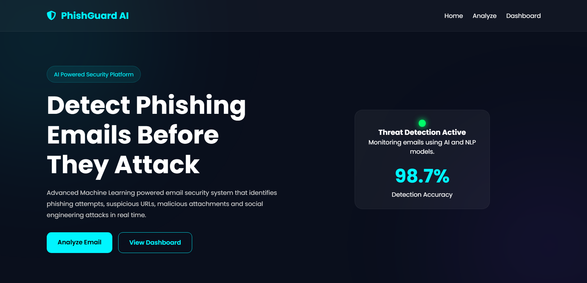
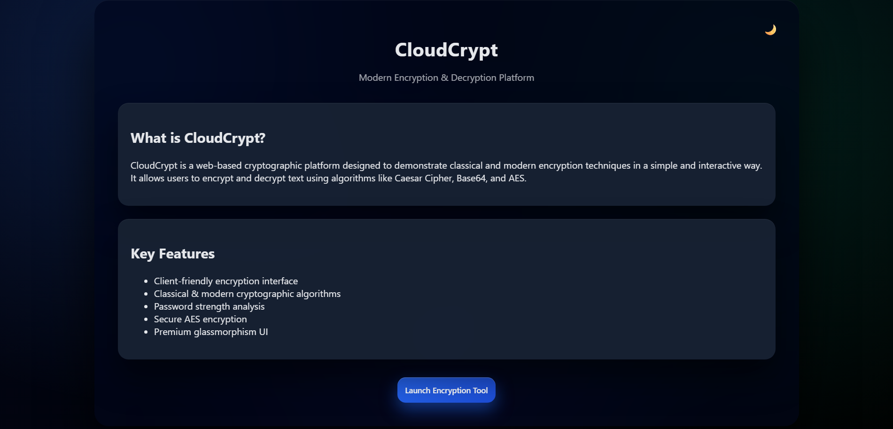

SOC / SIEM
SOC / SIEM
Virtual SOC Lab
A virtual security operations environment using Wazuh, Ubuntu Server, Windows, and Kali Linux for centralized log monitoring and security investigations.
View ProjectInitializing Portfolio...
Hello, I'm
B.Sc. IT-CTIS student passionate about cybersecurity, security operations, and threat detection. Building practical experience through SIEM monitoring, security investigations, and hands-on virtual labs.
tushar@cybersec:~$ whoami
Tushar Mondal
tushar@cybersec:~$ cat role.txt
Aspiring SOC Analyst
tushar@cybersec:~$ ls skills/
tushar@cybersec:~$ system_status
tushar@cybersec:~$ _
My journey into cybersecurity and security operations.
I am pursuing a B.Sc. in IT-CTIS and developing hands-on skills in security monitoring, Linux administration, networking, and incident response.
Through my virtual SOC environment, I practice collecting security logs, monitoring alerts, and investigating suspicious activities using Wazuh.
More About MeB.Sc. IT-CTIS
SOC Analyst / Cybersecurity
Virtual SOC Lab with Wazuh
Technologies and tools I use in my cybersecurity labs and projects.
Wazuh, Splunk, Microsoft Sentinel
Linux, Ubuntu Server, Windows, Kali Linux
TCP/IP, DNS, HTTP, Wireshark, Nmap
Log Analysis, IOC Investigation, Alert Triage
Python, HTML, CSS, JavaScript, SQL
Burp Suite, VirtualBox, Git, GitHub
Practical projects focused on cybersecurity, security monitoring, and application development.
SOC / SIEM
A virtual security operations environment using Wazuh, Ubuntu Server, Windows, and Kali Linux for centralized log monitoring and security investigations.
View Project
AI / CybersecurityAn AI-based phishing detection application designed to analyze suspicious email content and identify potential phishing indicators.
View Project
Web DevelopmentA web-based encryption and decryption platform demonstrating cryptographic techniques through a simple interface.
View ProjectSecurity investigation write-ups from authorized labs and simulated scenarios.
Failed login analysis, event correlation, and security alert investigation.
Investigating suspicious process activity and reviewing relevant security logs.
Reviewing file hashes, suspicious URLs, and indicators of compromise.
Developing practical cybersecurity knowledge through hands-on labs, technical documentation, and continuous learning.
Explore My LearningInterested in cybersecurity, security operations, or professional opportunities? Feel free to connect.
Contact Me